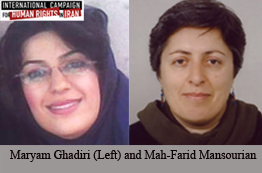
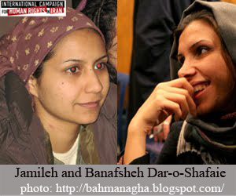
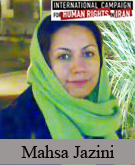

پذيرش > اخبار > دستگیری گسترده فعالان اجتماعی پیش از سالگردانقلاب ۱۳۵۷

 دستگیری گسترده فعالان اجتماعی پیش از سالگردانقلاب ۱۳۵۷ دستگیری گسترده فعالان اجتماعی پیش از سالگردانقلاب ۱۳۵۷
19 بهمن 1388 - - نسخه قابل چاپ
کمپین بین المللی حقوق بشر- دستگیریهای فله ای فعالان اجتماعی، زنان و سیاسی در ایام دهه فجر و تنها چند روز پیش از سالگردانقلاب اسلامی با دستگیری مریم قنبری از اعضای گروه میدان زنان و ماه فریدمنصوریان از فعالان محیط زیست ادامه پیدا کرده است. اکثر بازداشت های انجام شده طی ساعات نیمه شب و با ارایه یک حکم بازداشت کلی صورت گرفته و به اکثر یک از بازداشت شدگان گفته نشده که دلیل دستگیری چیست. به برخی از بازداشت شدگان گفته شده که علت دستگیری شرکت درتجمعات است. ماه فرید منصوریان ۵۵ ساله است و سابقه زندانی شدن در دهه شصت را به مدت شش سال در کارنامه فعالیتهای اجتماعی وسیاسی خود دارد.



منابع متعدد به کمپین بینالمللی حقوق بشر گفتند که افراد یاد شده به زندان اوین منتقل شدهاند. درهمه موارد افراد دستگیرکننده با تفتیش منزل رایانههای شخصی، دست نوشته ها و برخی وسایل شخصی آنها را با خودبرده اند. مریم قنبری جزو آخرین دستگیریهاست که بعدازظهر۱۹ بهمن ماه درمنزل خود بازداشت شد. وی وکیل، عضوگروه میدان و از اعضای کمپین استقلال کانون وکلاست. این کمپین پس از ارایه آیین نامه اصلاحیه کانون وکلا که عملا این کانون را به بخشی از قوه قضاییه تبدیل میکرد تشکیل شد. اگر چه به درخواست وکلای برجسته کشور، آیت الله شاهرودی رییس وقت قوه قضاییه این طرح را به مدت شش ماه مسکوت گذاشت. قنبری متولد سال ۱۳۶۳ واز فارغ التحصیلان رشته حقوق دانشگاه علامه طباطبایی است.
درمیان بازداشتشدگان ده روز گذشته می توان به دستگیری کاوه قاسمی کرمانشاهی، مازیار سمیعی، مهساجزینی و سمیه مومنی (بازداشت دونفرآخری در ۱۸ بهمن) از اعضای کمپین یک میلیون امضا اشاره کرد که از سرنوشت آنها هیچ اطلاعی در دست نیست. ماموران امنیتی همچنین زینب کاظم زاده (بازداشت ۲ صبح ۱۸ بهمن)، نیلوفرلاری پور (دستگیری ۱۳ بهمن) ونوشین جعفری از زنان روزنامه نگار و نیز نازنین فرزانجو، گلناز توسلی ونازنین حسن نیاو سحرقاسمی نژاد (دستگیری در۱۴ و۱۵ بهمن) از فعالان دانشجویی را دستگیرکردند. جمیله و بنفشه دارالشفایی از فعالان حوزه هنر (دستگیری ۱۵ بهمن ماه) و نیز علی کلایی از اعضای کمیته گزارشگران حقوق بشر نیز درمیان بازداشت شدگان هستند. گناز توسلی که دانشجوی هنردانشگاه آزاد اسلامی شعبه تهران است بعدازظهر ۱۵ بهمن درمنزلش توسط پلیس امنیت بازداشت شد.
مهساجزینی با بخش اصفهان روزنامه ایران فعالیت می کرد ولی درحوزه اجتماعی ازفعالان کمپین یک میلیون امضا دراین شهربه شمار می رفت. او همچنین یکی از دانشجویان ستاره داردانشگاه علامه طباطبایی است که به دلیل فعالیت های اجتماعی خود درحوزه زنان عملا از تحصیلات عالیه بازماند. او هم اکنون در زندان دستگرداصفهان به سر می برد.نیلوفر لاری نیز به عنوان شاعر وترانه سرا و مسوول صفحه ترانهها ی هفته نامه چلچراغ شناخته می شود و غیراز رفت وآمد به ستاد انتخاباتی میرحسین موسوی درایام انتخابات هیچ فعالیت سیاسی نداشته است. در
جمیله دارالشفایی پس از آن دستگیر شد که به دنبال احضار به دفتر پیگیری وزارت اطلاعات به این دفتر مراجعه کرد. مسوولان امنیتی از وی خواستند که به خانواده بگوید که به دفتر مراجعه کند. پس از مراجعه خواهر، پدر و مادر، بنفشه خواهر وی دستگیر شد. اگر چه پدرومادراو نیز چندین ساعت بازجویی شدند. ماموران همچنین همراه با پدرومادر این دوخواهر به منزل آنها رفته و به تفتیش وساپل آنها پرداختند. جمیله دارالشفایی فارغ التحصیل و مدرس موسیقی است. او همچنین فیلمانه نویسی سینما را درکارنامه هنری خود به همراه دارد.
سحرقاسم نژاد و نازنین حسن نیا که از خانوادههای اعدام شدگان دهه شصت هستند چهارصبح روز ۱۴ بهمن دستگیرشدند. به گفته منابع متعدد به کمپین این دو فعالیت سیاسی نداشتند. خاله نازنین مدتی را در دهه شصت درزندان سپری کرد. تنها ارتباط این دو با دستگیرشدگان اخیر، دستگیری امیدمنتظری و مادر وی مهین فهیمی است. همسر مهین فهیمی در سال ۱۳۶۷ همراه با تعدادنامعلومی از زندانیان سیاسی اعدام شد. مقامات جمهوری اسلامی ایران هیچگاه در خصوص این اعدام ها پاسخی نداده وسکوت کرده اند.
نازنین فرزانجو دانشجوی مترجمی زبان فرانسه است و با مجموعه فعالان حقوق بشر همکاری می کرد که در منزل خودش درمهرشهرکرج در تاریخ ۱۳ بهمن ماه بازداشت شد. سما بهمنی نیز روز ۱۳ بهمن درشهرمهاباد دستگیر شد. او اهل بندرعباس و مردادماه سال گذشته و پس از انتشار گزارشاتی درباره نقض حقوق بشر در منطقه کردستان به همراه همسر خود بازداشت شد. دادگاه شهرسنندج او را به اتهام تبلیغ علیه نظام و عضویت در مجموعه فعالان حقوق بشر به سه سال زندان تعلیقی محکوم شد. درحکم وی از او خواسته شده بود که از تردد در مناطق کردنشین و معاشرت با افراد سیاسی خودداری کند.
ارسال به
بالاترین
،
توییتر
،
فریندفید
،
فیسبوک
در همين بخش :
 پروین ذبیحی برنده جایزه حقوق بشری سازمان غيردولتى اتريشى سودويند شد پروین ذبیحی برنده جایزه حقوق بشری سازمان غيردولتى اتريشى سودويند شد
پخش کارت پستال و بروشور در روز جهانی زن در تهران
تمدید زمان برای امضای بیانیهی جمعی از فعالان زن به مناسبت هشت مارس
مجوزی که در نطفه خفه شد
بیش از 2000 امضا در اعتراض به تبعیض های آموزشی به مجلس تحویل داده شد
ديگر بخش ها :
طرح یک میلیون امضا
|
مقالات
|
سایت نوشته ها
|
اخبار
|
گزارش كمپين
|
گفت و گو
|
علیه سکوت
|
كوچه به كوچه
|
نامه های شما
|
گزارش ویژه
|
گفتگو با اعضا
|
ویژه سالگرد کمپین
|
تصویر برابری
|
دل آرام علی
|
تریبون
|
مقالات
|
تاریخ شفاهی
|
خارج از چارچوب
|
کتابخانه
|
درباره کمپین
|
کمپین در شهرها
|
کمپین در بند
|
صدای تغییر
|
ویژه 22 خرداد
|
لایحه حمایت از خانواده
|
گالری
|
عشا مومنی
|
امیر یعقوبعلی
|
خدیجه مقدم
|
راحله عسگری زاده و نسیم خسروی
|
پروین اردلان،جلوه جواهری، مریم حسین خواه، ناهید کشاورز
|
زینب پیغمبرزاده
|
سعیده امین، سارا ایمانیان، محبوبه حسین زاده، ناهید کشاورز و همایون نامی
|
احترام شادفر
|
نسیم سرابندی زاده،فاطمه دهدشتی
|
وبلاگ مهمان
|
پرونده خرم آباد
|
دستگیری ها
|
مریم مالک
|
پرستو اللهیاری
|
مهرنوش اعتمادی
|
سمیه رشیدی
|
Other Languages
|
همراهان
|
«فراخوان کمپین ده روز با بهاره هدایت»
| English
|